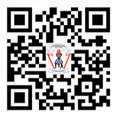

Utangulizi
Kitabu cha Kiswahili Darasa la Tatu kimetayarishwa kwa kuzingatia Muhtasari wa Somo la Kiswahili Elimu ya Msingi Darasa la Tatu mpaka la Sita wa Mwaka 2023 uliotolewa na Wizara ya Elimu, Sayansi na Teknolojia. Aidha, Kitabu hiki ni Toleo la Pili lililoboreshwa kutoka kitabu cha Kiswahili kilichochapishwa Mwaka 2018 kwa kuzingatia mtaala wa Mwaka 2016.
Lengo la kitabu hiki ni kukuza uwezo wako wa kuzungumza, kusikiliza, kusoma, kutumia tahajia ya alama na kuandika Kiswahili. Pia, kitakuwezesha kutumia msamiati wa lugha ya Kiswahili kwa namna mbalimbali. Vilevile, kitakujengea uwezo wa kupanga mawazo yako kwa mpangilio na mtiririko unaotakiwa.
Kitabu hiki kina hadithi, habari, mashairi, ngonjera, maigizo na majigambo. Vyote hivi vitakuwezesha kujifunza kwa ufasaha. Pia, kina maswali ya kupima ufahamu wako kutokana na ulichokisikiliza, ulichokiona au ulichokisoma. Vilevile, kina mazoezi mbalimbali yatakayokuwezesha kujenga ujuzi wako wa somo la Kiswahili.
Soma kwa makini kitabu hiki ili uweze kujenga ujuzi wako wa kumudu somo la Kiswahili.
